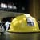
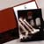
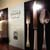
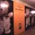

The Revitalization of an Historic Landmark
Background
The Metropolitan Transportation Authority (MTA) set four goals when it began the revitalization of Grand Central Terminal: to enhance it's transportation function by making it easier to get around; revive its status as an historic landmark property; turn it into a profitable leasing environment; and make it a center for civic, corporate and cultural events.
During the revitalization's first phase, all restaurant and retail leases were terminated so that in place of run-down stores and quick food stands would be food halls with the freshest produce, open-air restaurants for a quick bite, restaurants for leisure dining, a mix of shops, and all the amenities that commuters, visitors and tourists use. Different levels would be opened up and everything would be restored and cleaned from the high ceiling to the chandeliers.
We were commissioned to develop positioning and a new identity for the terminal.
Positioning
Because the MTA planned a three year renovation, we developed a three-phased positioning through terminal graphics, promotions and retail planning. The first phase introduces the idea that the terminal offers "the best of NY" - that it is not a tourist location, but a "city center" close to the hearts of New Yorkers themselves. The second phase introduces the theme "meet me at Grand Central," and the third extends the positioning outward to the predominately corporate neighborhood surrounding the terminal. The end result: that Grand Central be perceived as the best of New York, where people meet in a unique neighborhood, at the center of the city.
The positioning set the foundation for the MTA's ongoing efforts to communicate to terminal users that the station will be a destination in and of itself - a place to shop, visit exhibitions, listen to music, and enjoy quality dining.
Identity
The identity we developed revisits the past through its abstraction of Beaux Arts ironwork, but looks to the future through contemporary letter forms. The strong bronze and black color palette provides a distinct, yet classic feel.
Promotion
The identity's first application was to a giant hard hat that signaled the start of construction and was introduced at a launch event attended by the Governor, Mayor, other politicians, and luminaries.
Signage/Ad Billboards
As construction signs were soon to be installed, we utilized them as ad
billboards that would help the MTA increase awareness of and support for the project, lessen the discomfort and confusion brought on by the renovation efforts, and reposition Grand Central from "train station" to "New York landmark destination." Through messages that were fun, upbeat and surprising - "a little New York humor" went a long way towards alleviating the frustrations of construction.